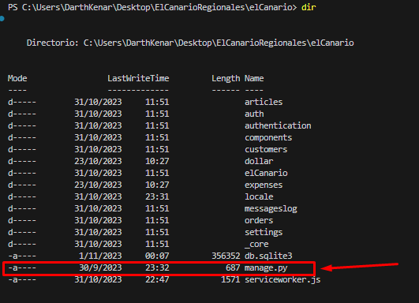

Documentacion Técnica Online Completa
Objetivo
Aplicación web para control de Stock, Clientes y Ordenes para un pequeño negocio.
PRESENTACIÓN
DISEÑO RESPONSIVE

CAMBIA DE IDIOMA

CAMBIA DE TEMA

Funcionalidades
- Crea, edita, elimina clientes
- Crea, edita, elimina artículos
- Crea, edita o elimina categorías para artículos
- Crea, edita o elimina valores relacionados con una categoría específica (para relacionarlos con un artículo específico)
- Crea, edita, elimina ordenes
- Creacion automática de registro de acciones mostradas en el panel principal (escritorio)
- Sistema de autentificación completo
- Inicio de sesión (o registro) con cuenta de Google
- Registro
- Inicio de sesión
- Recuperacion de contraseña
- Confirmación de e-mails (no obligatorio a fines practicos)
- Sistema de doble autentificacion (2FA) (no obligatorio a fines practicos)
- y mucho más...
- Filtrado de Cartas (objetos [Clientes, Ordenes, Artículos]) en base a cualquiera de sus atributos (Implementado HTMX pagina dinámica)
- Instala la aplicacion en tu celular (Aplicación web progresiva)
Primeros pasos
Con python instalado
Clonar proyecto
git clone https://github.com/DarthKenar/ElCanarioRegionales.git
Instala mkdocs para visualizar la documentacion completa del proyecto
pip install mkdocs
En el directorio actual del proyecto ejecuta
mkdocs serve

> Para ejecutar la aplicacion con PDM
Si no tienes pdm (instálalo)
pip install pdm
Si tienes pdm o una vez que lo tengas
Instala las dependencias en el entorno virtual
pdm install
Realiza las migraciones para utilizar una base de datos local
pdm migrate
Ejecuta el servidor
pdm server
> Para ejecutar la aplicacion con PIP, primero creamos un entorno virtual
py -m venv nombre_del_entorno
Activa el entorno virtual
source nombre_del_entorno/bin/activate
En el entorno virtual activado
pip install -r requirements.txt
Con las dependencias ya instaladas nos dirigimos a la carpeta que contiene el archivo python manage
cd ElCanarioRegionales
cd elCanario
Comprobamos que en el directorio se encuentre el archivo python manage
cd dir

Realizamos las migraciones para utilizar una base de datos local con
py manage.py migrate
Ejecutamos nuestro servidor local con
py manage.py runserver
NOTA
Si se utiliza un servidor local la funcion de logear con google no estará disponible por no tener disponibles las credenciales de google Para más información: Credenciales de Google
Diagrama de Modelos
erDiagram
Article one or zero to many ArticleValue : characteristics_id
Article |o--|| ArticlePromotion : in
Article |o--|| ArticleOrder : in
ArticleValue |o--|| Value : get
ArticleValue |o--|| Category : get
Value |o--|| Category : get
ArticlePromotion |o--|| Promotion : get
ArticleOrder |o--|| Order : get
Order |o--|| Customer : places
Article {
id BigAutoField
image Imagefield
name CharField
buy_price DecimalField
increase DecimalField
sell_price DecimalField
stock PositiveSmallIntergerField
}
ArticleValue {
id BigAutoField
article_id ForeingKey
category_id ForeingKey
value_id ForeingKey
}
ArticlePromotion {
id BigAutoField
article_id ForeingKey
promotion_id ForeingKey
}
ArticleOrder {
id BigAutoField
article_id ForeingKey
order_id ForeingKey
}
Value {
id BigAutoField
name CharField
category_id ForeingKey
}
Category {
id BigAutoField
name CharField
}
Promotion {
id BigAutoField
name CharField
discount DecimalField
remainder SmallIntergerField
sell_price DecimalField
}
Order {
id BigAutoField
customer_id ForeingKey
article_quantity PositiveSmallIntergerField
creation_date DateTimeField
delivery_status BooleanDield
details TextField
total_pay DecimalField
updated_date DateTimeField
}
Customer {
id BigAutoField
address CharField
email EmailField
name CharField
phone_number CharField
}